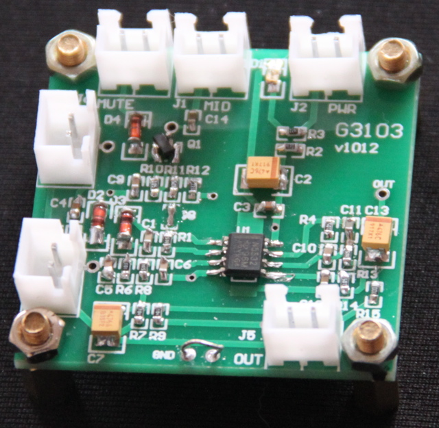
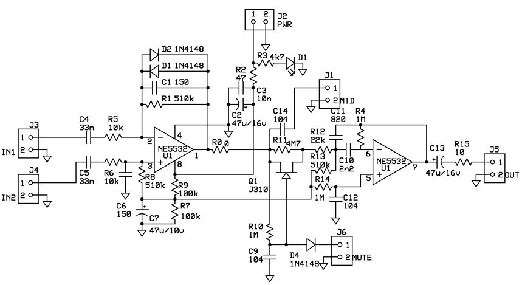
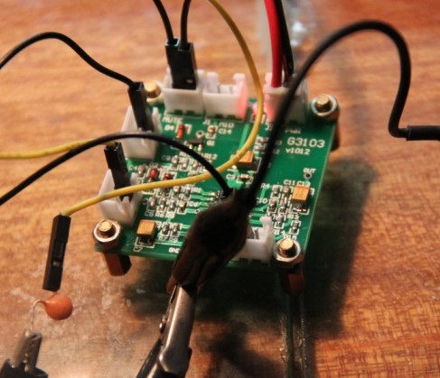

G3103是使用 TI 的 NE5532 做的接收机音频前端电路。
 G3103模块内由三个部分组成，分别是两级运放和一个切断开关。 12V供电时，工作电流10mA。
第一级运放就是基本的负反馈放大电路，其输入接成了平衡双路方式，适合直接接NE602的平衡输出。 当然也可以只接IN1，也就是负输入端做单端输入。 在第一级的负反馈电路上并联了两个对向的硅二极管，这两个管子起到了限制增益的作用， 当输入电平过高时，这两个二极管会把输出限制到一定的电平之下。 当输入超过4mV时，这两个二极管会启动。 第一级的电压增益是32dB。
J1把第一级的输出引出，当单独使用第一级时，可以从这里输出。 建议当G3103后面要接G3101时，只使用其第一级。
 切换开关是由JFET J310实现的。J310的G和S由R10连起来，它们是等电位的，所以Q1是导通的。 当J6的两端连起来时，Q1的G的电压就低于S了，这使得Q1截止，从而切断了前后两级之间的 信号通路。 这个切断开关是用在收发信机的收发转换功能上的。当收发信机切换到发射时，通过Q1就可以切断 音频输出。
第二级运放实现了两个功能：一个带通滤波器和一个耳机驱动器。 带通滤波器的中心频率为800Hz，3dB带通为500Hz。 输出经过C13和R15可以驱动耳机，12v供电时，8ohm负载上10%THD的最大输出功率可达14mW。 第二级的电压增益是32dB。
PCB下方的GND，是用来插入一条折起来的引脚，构成一个环。可以用来插万用表表笔的地笔，或夹示波器探头的地鳄鱼夹。